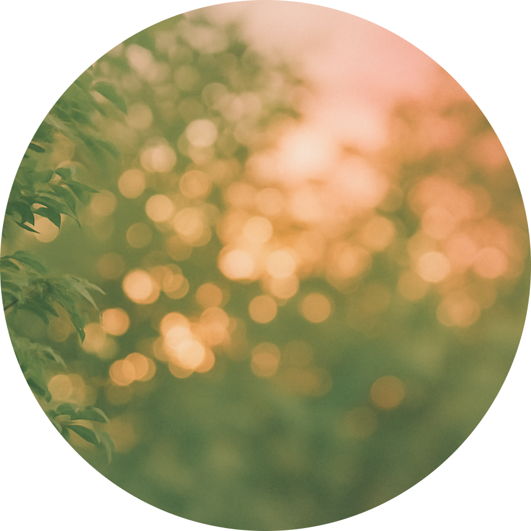

About
About
-自己紹介-

ごあいさつ
はじめまして。
web design. irotogiの渡邊彩伽と申します。
以前は、日本代表としてアスリート活動に取り組んでおりましたが、
引退を機にWebデザイナーへ転身いたしました。
目標に向かって一歩一歩努力を重ねること、諦めずに挑戦し続ける
姿勢は、今のデザインのお仕事にしっかりと活きています。

いろとぎ
現在は「irotogi」という名前でデザインの活動をしています。
この名前には、"心に彩りを届ける"という想いとともに、
"色を磨ぐ"-感性や感性や技術を磨き続けることで、
自分自身も成長し続けたいという想いが込められています。

めざすもの
私が目指しているのは、「柔らかさ」と「芯のある力強さ」
を感じられるデザインです。使いやすさや信頼感にもこだわ
りながら、スポーツだけでなく医療・教育・美容など
さまざまな分野のお手伝いをいたします。
そして何よりも大切にしていることは、クライアント様との
コミュニケーションです。じっくりとお話を伺いながら、
想いやビジョンに寄り添ったご提案ができるように心がけて
おります。